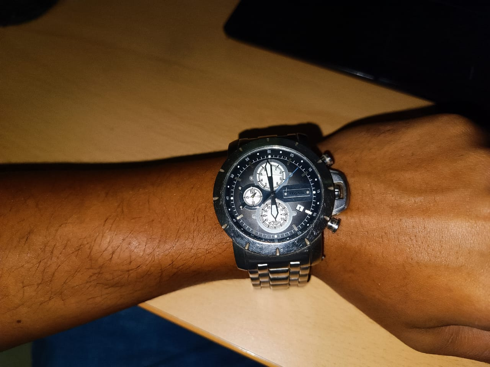
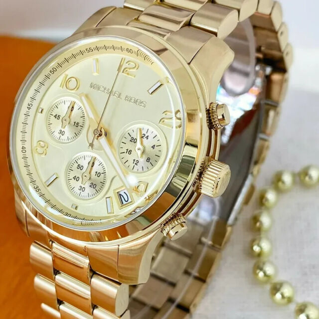
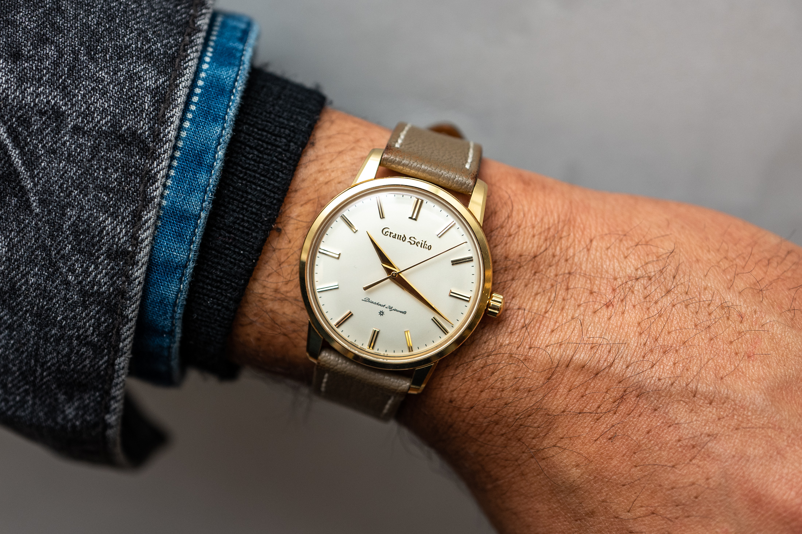
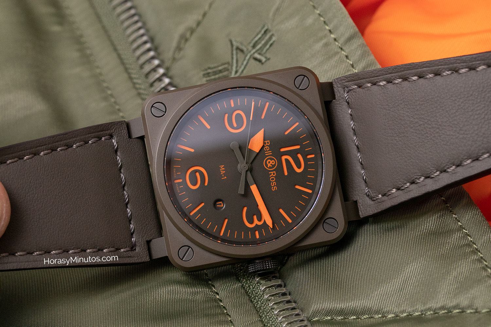
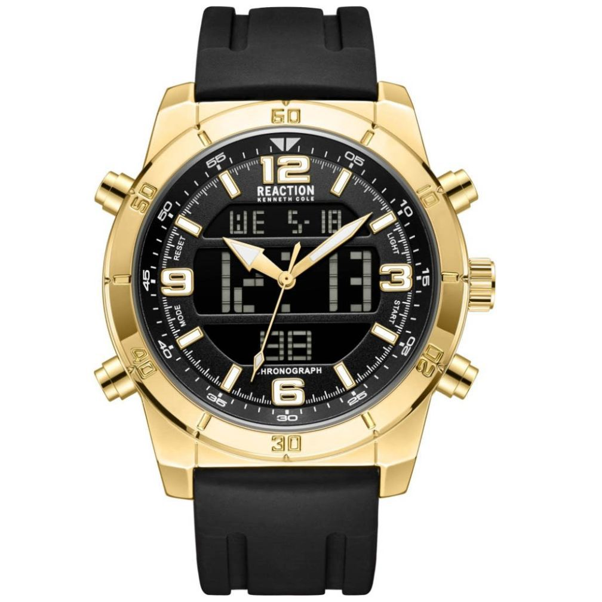
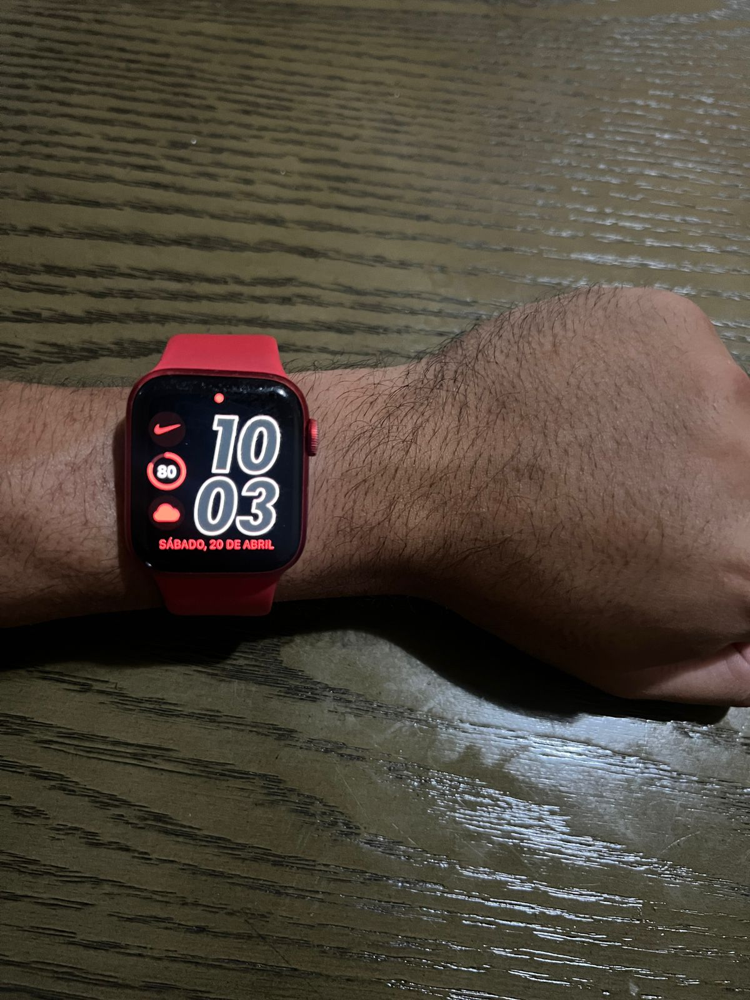

Reloj Fossil para Hombre
Sumergirse en el universo de un reloj Fossil usado, en particular uno de color plateado, es
explorar un matrimonio exquisito entre estilo contemporáneo y funcionalidad atemporal. Con su
caja de acero inoxidable pulido, este reloj evoca una elegancia sutil pero impactante. Cada
línea y curva están meticulosamente diseñadas para crear una armonía visual que no pasa
desapercibida. La esfera plateada, delicadamente adornada con marcadores de hora y agujas
luminescentes, es un lienzo que captura la luz de manera cautivadora, jugando con las sombras y
los reflejos. La correa de acero inoxidable, con sus eslabones bien definidos, ofrece
resistencia y flexibilidad, adaptándose con gracia a la muñeca de quien lo lleva. Cada detalle,
desde el bisel hasta la hebilla, está impregnado de calidad y artesanía. Este reloj, aunque
usado, lleva consigo una historia, cada marca y rasguño cuenta una parte de un viaje personal.
Su aura plateada, a la vez moderna y clásica, lo hace versátil, adecuado tanto para ocasiones
formales como informales. Es más que un accesorio; es una declaración de estilo, una
manifestación de gusto refinado y apreciación por lo excepcional. Con cada tic-tac, este reloj
Fossil usado sigue marcando el tiempo con gracia y distinción, recordando que la verdadera
elegancia es eterna.

Reloj Michael Kors para Mujer
Sumergirse en el universo de un reloj Michael Kors es explorar un matrimonio exquisito entre estilo contemporáneo y funcionalidad atemporal. Con su caja de acero inoxidable pulido, este reloj evoca una elegancia sutil pero impactante. Cada línea y curva están meticulosamente diseñadas para crear una armonía visual que no pasa desapercibida. La esfera plateada, delicadamente adornada con marcadores de hora y agujas luminescentes, es un lienzo que captura la luz de manera cautivadora, jugando con las sombras y los reflejos. La correa de acero inoxidable, con sus eslabones bien definidos, ofrece resistencia y flexibilidad, adaptándose con gracia a la muñeca de quien lo lleva. Cada detalle, desde el bisel hasta la hebilla, está impregnado de calidad y artesanía. Este reloj, aunque usado, lleva consigo una historia, cada marca y rasguño cuenta una parte de un viaje personal. Su aura plateada, a la vez moderna y clásica, lo hace versátil, adecuado tanto para ocasiones formales como informales. Es más que un accesorio; es una declaración de estilo, una manifestación de gusto refinado y apreciación por lo excepcional. Con cada tic-tac, este reloj Michael Kors usado sigue marcando el tiempo con gracia y distinción, recordando que la verdadera elegancia es eterna.

Reloj Grand Seiko para Hombres
El reloj Grand Seiko SBGW252 es una obra maestra de la relojería japonesa que combina elegancia, precisión y artesanía
excepcional. Presenta un diseño clásico inspirado en los primeros relojes Grand Seiko de la década de 1960, con una caja
de acero inoxidable de 37 mm y un dial plateado con marcadores horarios aplicados y agujas en forma de hoja.
En su interior, alberga el calibre manual 9S64, un movimiento de alta calidad desarrollado y ensamblado en la famosa
manufactura de Grand Seiko en Japón. Este movimiento ofrece una reserva de marcha de aproximadamente 72 horas y una
precisión excepcional, certificada por los estándares de Grand Seiko.
El SBGW252 es un homenaje a la tradición relojera de Grand Seiko, con detalles cuidadosamente ejecutados y una atención
meticulosa a la calidad. Es una pieza atemporal que combina la artesanía japonesa con la innovación técnica, perfecta
para los amantes de los relojes que valoran la excelencia en cada detalle.

Reloj Bell Ross Para Hombre
El reloj Bell & Ross es una obra maestra de la relojería de lujo. Inspirado en la aviación y el ejército,
este reloj combina durabilidad con diseños clásicos. Cada reloj Bell & Ross presenta un dial circular,
una caja cuadrada y una decoración de cuatro tornillos, lo que le da un carácter audaz y una silueta distintiva.
Los relojes Bell & Ross varían desde sencillos relojes de aviación de tres manecillas hasta ejemplos ornamentados
de alta relojería con cajas de zafiro. A pesar de ser una marca francesa, Bell & Ross produce relojes suizos.
Todos sus relojes se fabrican en La Chaux-de-Fonds, una región popular de relojería en Suiza.
El reloj Bell & Ross es más que un simple reloj, es una declaración de estilo y una inversión
en calidad. Con un reloj Bell & Ross en tu muñeca, no solo estarás llevando un reloj,
sino también una pieza de historia y un testimonio de la excelencia en la relojería.
Así que, si buscas un reloj que combine la funcionalidad con el estilo, que sea duradero y
tenga un diseño clásico, el reloj Bell & Ross es la elección perfecta para ti. ¡No esperes más
y hazte con tu Bell & Ross hoy mismo

Keneth Cole Reaction
Creada por el diseñador de origen Judío Kenneth Cole en 1982. Kenneth nació en Brooklyn, Nueva York en el
seno de una familia de fabricantes de zapatos, de aquí sus precedentes en el sector de la moda y
complementos. Estudio y se graduó en el College of Arts. de Emory University. Pero también tenemos que
resaltar su faceta empresarial colaborando tempranamente en la empresa familiar y como activista en muchas
causas humanitarias, lucha contra el Sida, AnFAR y muchas más. Su línea de relojes está marcada por su lugar
de nacimiento, el estilo de la gran manzana es evidente.

Apple Watch Series 7
El reloj inteligente de la marca Apple ha sido uno de los relojes mas vendidos y deseados por su diseño
elegante y excepcional, con sus distintas adaptaciones de correas puede convertirse en un reloj adaptable
tanto como para ocasiones elegantes o casuales.